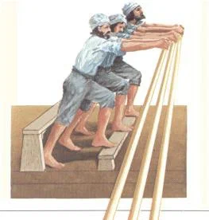

Адмирал-реформатор Руджеро ди Лауриа
Точной информации о том, как в XIII веке галеры-биремы с системой гребли alla sensile стали триремами конечно же нет. Самая вероятная гипотеза заключается в том, что морские стратеги (проницательные люди, как называет их Марино Сануто Торчелло в отрывке, приведенном в предыдущем посте) просто-напросто убедились, что можно взять на борт дополнительное число гребцов, получив при этом определенное увеличение скорости галеры. Этот дополнительный контингент получил название tersols на каталанском языке, tercilerii на латинском, или его просто так и называли - marinarii subtani – «сверхштатники». Точно не известно, как их использовали: то ли они помогали «штатным» гребцам, садясь дополнительно на те же банки, то ли, что более вероятно, просто подменяли их, когда те окончательно выматывались. Из дошедших до нас документов достоверно известно, что на сицилийских галерах в период между 1270 и 1280 гг. число весел никогда не превышало 108 штук. Однако все изменилось в ходе войны Сицилийской вечерни.

В войне Сицилийской вечерни участвовали с одной стороны силы Карла Анжуйского, брата Людовика IX Святого и ставленника папы, с другой стороны сицилийцы со своими союзниками, главным из которых на начальном этапе был Арагон. Наиболее выдающийся флотоводец той войны великий сицилийский адмирал (это титул, а не оценка его роли в морской истории) Руджеро ди Лауриа имел возможность использовать корабли всех воюющих сторон, как сторонников, так и противников Сицилийской вечерни. (Известно, что на заключительном этапе боевых действий он выступал уже на стороне противников сицилийцев.) Не исключено, что именно опыт боевого использования галер привел Руджеро ди Лауриа к идее увеличения числа гребцов на традиционных галерах с двух до трех человек на банку. Развитие этой идеи привело к революционному изменению конструкции галеры. Так что те, кто читал или будет читать отличную книгу Стивена Рансимена «Сицилийская вечерня: История Средиземноморья в XIII веке» (в 2007 г. вышел ее русский перевод), должен учесть заслуги адмирала Руджеро не только в развитии стратегии и тактики морской войны, но и в области кораблестроения, в книге к сожалению на отмеченные.
Руджеро не боялся экспериментировать с числом гребцов и оборудованием их «рабочих мест». Начал он с увеличения числа весел до 120 и защитой гребцов от поражения оружием противника, создав своеобразный «броневой» пояс вокруг них.. Несмотря на то, что корабли Руджеро слегка потеряли в скорости и маневренности, они успешно противостояли анжуйским галерам и практически всегда побеждали их. Интересный момент: генуэзцы, которые часто и безуспешно противостояли галерам Арагона, именно генуэзцы поставили точку в превращении галеры-диеры в триеру. Первой галерой-триерой нового поколения, название которой дошло до нашего времени, стала Sancta Kathalina, имевшая 150 весел. В исторических документах описан ее переход из Генуи в Эг-Морт. Эпоха монорем и бирем закончилась. Начался период господства триер, доведенных до совершенства в четырнадцатом веке в Генуе и Венеции.
Понимаю, что не всем нравится, когда в тексте появляется много цифр и техническим подробностей. Но мы говорим о корабле, понять эволюцию которого, преимущества нового образца перед старым, вскрыть логику развития военного кораблестроения на конкретном историческом этапе невозможно, не анализируя его характеристики. Поэтому тот, кого тошнит от точных наук, может пропустить следующие абзацы.
Итак, без дополнительных разъяснений понятно, что превращение диеры в триеру не могло ограничиться только добавлением еще одного гребца на каждую банку. Измениться должна вся конструкция корабля. Естественно, начинаться все должно было с увеличения ширины корабля. Но именно начинаться, а не ограничиваться этим.
Увеличение численности гребцов было предпринято с главной целью добиться увеличения скорости галеры. Мы уже говорили раньше, что первым и основным фактором в увеличении скорости является мощность «двигателя» и эффективность весла. Второй фактор – сопротивление трения, которое оказывает корпус галеры при ее движении. Учитывая, что галеры регулярно вытаскивали на берег, проблем с обрастанием корпуса ракушками и водорослями быть не должно. Технология изготовления обшивки корпуса вгладь также способствовала снижению трения. Таким образом, сопротивление трения у разных галер зависело только от поперечного сечения корпуса на мидель-шпангоуте (при одинаковой длине корпуса), или, при определенных условиях, от ширины корпуса на уровне ватерлинии в сечении мидель-шпангоута. Следовательно, при данной длине корабля и мощности его «двигателя» (количестве гребцов), чем ỳже будет галера, тем она быстрее. Однако здесь в дело вступает другой фактор: чем больше отношение длины к ширине (на уровне ватерлинии), тем более неустойчивым становится корабль, т.е тем хуже его остойчивость. Современные кораблестроители не увеличивают это отношение более чем 8:1. По документам из канцелярии Карла Анжуйского для его галер это отношение составляло 10,72:1. При низком надводном борте (при всех оценках не более 0,75 м) остойчивость этих галер была не пределе.
Новые триремы оказались ближе к компромиссу. Чтобы принять дополнительных гребцов ширина корпуса была увеличена. Если у анжуйских галер она составляла около 3,7 м, то у трирем – ок.5 м. Анжуйские галеры имели 108 гребцов, размещенных на 27 банках с каждого борта. Триремы имели 150 гребцов, размещенных на 25 банках. Учитывая, что интерскалмиум (расстояние между банками) равнялось и в том и в другом случае 1,2 м, то триремы могли быть сделаны на 2, 5 м короче, чем биремы. Однако, документы показывают, что их длина была практически одинакова: 39,55 м у бирем и 40 м у трирем. Отношение длины к ширине сократилось до 7,52:1. Увеличение числа гребцов на 42 человека теоретически должно было увеличить мощность «двигателя» на 39%. Но на самом деле это увеличение конечно же меньше. Как оказалось, и скорость триер стала не намного больше. Зато новая конструкция позволила улучшить боевые свойства корабля сразу по трем показателям: он стал более остойчив, более прочен и получил дополнительное место для размещения бойцов на носу и корме.
В следующий раз мы посмотрим, как же изменилась система гребли на триерах.